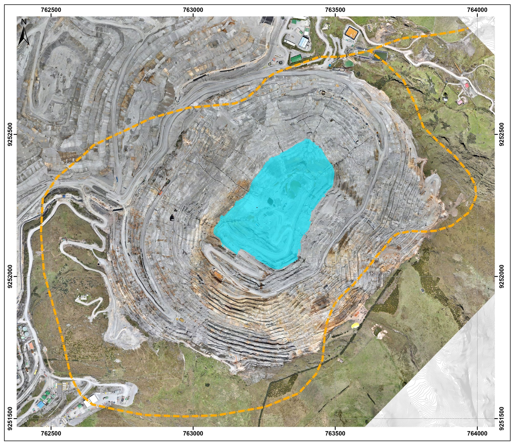

Piezómetros en el mapa

Color = tendencia del nivel piezométrico en los últimos 30 días (umbral ±0.10 m). Cada etiqueta muestra el ID y el último nivel registrado. La ubicación de cada punto se calculó a partir de la grilla de coordenadas UTM impresa en el plano — clic en un punto para ver su serie histórica. Rueda del mouse sobre el plano = zoom (no afecta el resto de la página).
Piezómetros
Rango de fechas
| ID | Tipo | Ubicación | Último nivel (msnm) | Fecha | Días sin dato | Tendencia (30d) |
|---|
Clic en una fila para abrir su serie histórica en la pestaña Análisis Temporal.